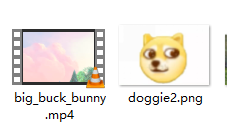

在ffmpeg中，添加水印需要用overlay滤镜，这是一个复杂滤镜，因为它需要两个输入，默认第一个输入是主画面，第二输入为水印，先执行一个简单的看看。
下面有两个文件，一个是可爱的大雄兔，一个是可爱的doggie，咱们就把doggie加到大雄兔上面去

执行命令ffmpeg -hide_banner -i big_buck_bunny.mp4 -i doggie2.png -filter_complex "overlay=x=0:y=0" out.mp4 -y
这个命令的作用是在视频的左上角添加水印，命令中的x和y表示水印在视频中的位置，视频左上角坐标为(0,0)，向右向下延伸。
执行完成后，打开输出文件，效果如下
是不是很简单？
简单的看过了，下面来个稍微有一点点难度的
如果要把水印加到右上角，怎么处理？
可能有的小伙伴会说，先看看视频和图片的分辨率啊，然后算一下x，不就可以了？
这样当然是可以的，可是如果要批量处理不同分辨率的视频呢？这时再用上面的方法恐怕会累死人吧。
为了解决上面问题，再引入四个参数：
- main_w(W)：主画面的宽度
- main_h(H)：主画面的高度
- overlay_w(w)：水印宽度
- overlay_h(h)：水印高度
有了这四个参数，再来看上面的问题ffmpeg -hide_banner -i big_buck_bunny.mp4 -i doggie2.png -filter_complex "overlay=x=W-w:y=0" out.mp4 -y
上面的命令等效于ffmpeg -hide_banner -i big_buck_bunny.mp4 -i doggie2.png -filter_complex "overlay=x=main_w-overlay_w:y=0" out.mp4 -y
执行后，看看输出文件
咱们的小doggie跑到右上角去了。
有了上面的例子，那左下角、右下角怎么放聪明的小伙伴肯定知道了吧，就不啰嗦了。
这篇只是添加一个图片作为水印，现在的视频都不会这么简单了，通常都是动态的水印，或每隔一段时间出现一次，这种下篇再讲吧，一步步来。